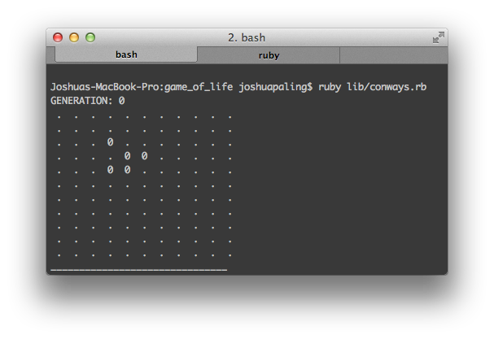
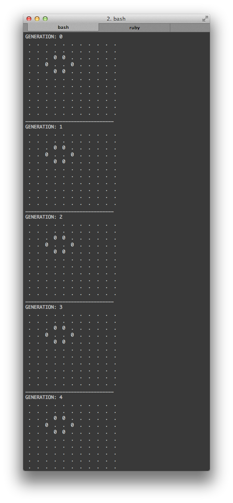

Joshua Paling
Update: I am going. Yay. And I made some virtual scrap paper for Conway's Game of Life.
There's a senior / junior hack night on tomorrow night. They'll be doing Conway's Game of Life. I wish I could make it, but I gotta look after my babies.
Anyway, instead, I did Game of Life myself at Development Hub tonight. I got it working, but it's a bit messy and needs some refactoring (surprise!). I've written up some tips, based on my experience writing the game tonight, and my experience being involved with learning and teaching ruby over the past year.
Juniors are junior
Duh! But it's easy to forget just how incredibly abstract coding is to newbies. As much as possible, introduce only one new concept at a time. You have to break bigger problems into smaller steps. (And yep, for a new dev, Conway's is a big problem).
Code retreat format sucks for juniors
The code retreat format (throwing out code every 45 mins, adding new restrictions each round) is a great challenge for advanced developers. It's a nightmare for juniors. Don't throw out code; don't enforce any restrictions.
Don't start with TTD
Yep, I did really just say that. If the 'junior' is already pretty comfortable with the problem at hand, and is also comfortable with writing tests, fine. But most probably won't be.
Here's the steps to learning TDD:
a) Learn to write code b) Learn to write tests for your code, after the fact c) Learn to write tests before writing your code (TDD)
Each step introduces a new level of abstraction. So, one new concept at a time.
If your junior is pretty good, you'll probably get to a bit of b). If they're awesome, you'll get into a bit of c). But don't feed a baby with a shovel.
You can encourage them to re-start and re-write it all, TDD-style, another time. But not until they feel confident at step b)
Start with a visualisation of the world
As a first step, before implementing any of the specific game rules, aim to represent a single state of the world. It'll look something like this:

0 is a live cell, ` . ` is a dead one. A space either side of each 'cell' makes it more clear.
Doing this will immediately remove some of the abstraction, and help you see what's going on inside your code.
It's also an achievement within itself - even if this is all you completed the whole night, you got something useful and tangible done. (This'll feel more satisfying for a newbie than 10 green dots after running rspec.)
Next, create some good example states
Check out the example patterns on wikipedia. Implement 3 or 4 as 'starting states' in your game, just for testing (manually, visually testing) your game, as you start to implement the rules.
Example still states


Example oscillating states (yours obviously won't oscillate just yet!)


You might like to have a class that creates these different starting states. You could call it genesis.rb while it's not working, then rename it big_bang.rb once it is.
Down the track, you may find it useful to create specific starting states for testing specific rules, as you're implementing them.
Next, iterate over generations
You won't have implemented any of the game rules at this point, so each generation will look the same. It'll just print the state of the world to the console, sleep for a moment, then print again.
Something like this:

Now, code for your life!
You've got a basic structure in place that will help you visualise what's going on in your code. You can now implement the specific rules for Conway's Game of Life, one at a time.
As you add logic, you'll be able to use what you've done so far to see what is and isn't working.
If you're game, start writing tests
Once you start getting some rules implemented, and can see them playing out in your terminal output, start writing tests. Your tests will help you make sure future changes don't break your existing work.
If you're really comfortable with that, start writing tests for new features first, before writing the code itself. This is TDD.